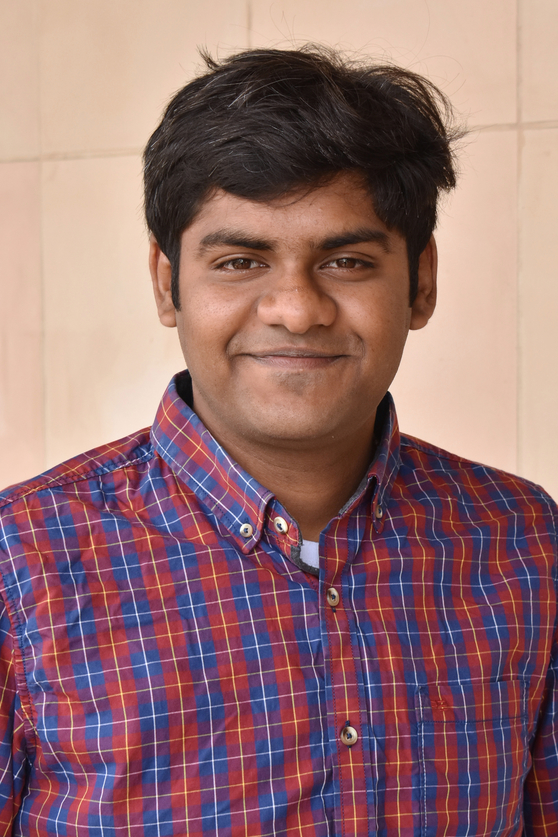

Kiran Ranganath
Graduate Student (PhD)
Electrical and Computer Engineering, University of California at Riverside
Systems optimization and Computer Architectures Lab (SoCal)
Adviser: Professor Daniel Wong
Education
Current: Doctor of Philosophy, Electrical and Computer Engineering, UC Riverside, CA 92507, USA, (September 2016 - Present)
Previous: Bachelor of Engineering, Electronics and Communication Engineering, Visvesvaraya Technological University, Karnataka, India, (Septembet 2010 - July 2014)
Research and Other Interests
I am interested in Computer Architecture, GPGPU Computing and Network Architectures for Data Centers, and Green Computing.
Outside of Engineering, I love public policy (especially economic and foreign), social entrepreneurship and Philosophy. :-)
Courses at UCR
- Advanced Computer Architectures (CS 203 with Prof. Daniel Wong)
- GPU Architecture and Parallel Programming (CS/EE 217 with Prof. Daniel Wong)
- High Performance Computing (CS 211 with Prof. Zizhong Chen)
- Advanced Operating Systems (CS 202 with Prof. Nael Abu-Ghazaleh)
- Computer Security (CS 255 with Prof. Zhiyun Qian)
- Microarchitecture (EE 260 with Prof. Daniel Wong)
- Advanced Computer Networks (CS204 with Prof. Jiasi Chen)
- Multiprocessor Architecture (CS213 with Prof. Laxmi N. Bhuyan)
- Network Routing (CS240 with Prof. Michalis Faloutsos)
Contact Information
Office (Mailing Address):
WCH 459, UC Riverside
900 University Avenue,
Riverside, CA 92521
Email:
krang006@ucr.edu
kiran7193@gmail.com
LinkedIn
GitHub